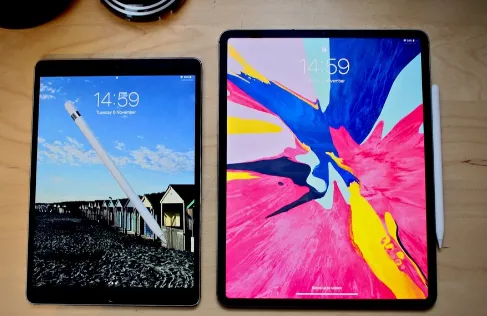

What does unlocked Ipad mean
Can you buy an iPad "unlocked" or is it tied to a wireless service provider?
Are all iPads unlocked or restricted to a specific wireless service provider? Are there iPad models available for purchase that can be used with any carrier? In the US, all iPad models of any generation with cellular support are not technically limited to one carrier. But that doesn't guarantee that all models are fully compatible with any carrier. The reason is that each configuration, designed for a particular company, supports only certain standards. Before buying, you may need to pay attention to the technical specifications of the model in question.
The original iPad and iPad 2
In particular, the first two generations of GSM-based iPad models do not work with the 1700 MHz UMTS / HSDPA 3G system used by T-Mobile. The CDMA 3G network (used by Verizon) was also not compatible with such devices. Meanwhile, in the U.S., the CDMA variant of the iPad 2 only supported operation with Verizon. As it was incompatible with AT&T and other GSM-based networks.
The original iPad and iPad 2 variants, which used GSM, were not blocked and therefore could be used with cellular companies other than AT&T. In that case, however, they could not run on 3G; instead, they used the slower 2G technology.
CDMA networks involve a somewhat more convoluted authentication process than simply swapping SIM cards of GSM mobile service providers. Thus, operating a CDMA-based iPad 2 with a carrier other than Verizon could definitely be problematic. Fortunately, some time after the hack was created. Which allows the CDMA-based iPhone 4 to work on Cricket networks, a similar solution became possible for the iPad 2.
The 3rd Generation iPad
Third-generation iPad models are still not technically tied to a specific carrier. However, the model for AT&T used 4G LTE at 700 MHz and 2100 MHz, UMTS / HSPA / HSPA + / DC-HSDPA (supported frequencies 850, 900, 1900, 2100 MHz) and GSM / EDGE (frequencies 850, 900, 1800, 1900 MHz. ). The tablet has been used worldwide by many carriers, but its cellular service has been limited to AT&T in the U.S. and Telus, Bell and Rogers in Canada. Because the devices sold in that region worked only on 4G LTE frequencies. Meanwhile, outside of those two countries, this generation iPad only supported 3G technology. This discrepancy caused some legal problems for Apple. The AT&T version was also compatible with T-Mobile, though in that case it only worked with a much less fast 2G network.

The 4th generation iPad and the 1st generation iPad mini
The situation with Apple's fourth-generation tablets is pretty much the same, as they are still not tied to a specific mobile service provider. But both the 4th generation iPad and the first generation. iPad mini in cellular configurations came in several variants supporting only certain LTE bands that are only used by certain companies' networks. In particular, the Wi-Fi / AT & T / GPS versions of the 4th generation iPad (A1459) and iPad mini (A1454) used UMTS / HSPA + / DC-HSDPA, GSM / EDGE and only two LTE bands: 4 and 17. They were designed to work only with specific cellular companies: Bell, Rogers and Telus in Canada and AT&T in the US. Meanwhile, the Wi-Fi / Verizon and Spring / GPS versions. Specifically. The A1460 fourth-generation iPad and 1455 iPad mini, could also use UMTS / HSPA + / DC-HSDPA, GSM / EDGE, and CDMA EV-DO Rev. and Rev. B, and also worked with LTE bands 1, 3, 5, 13, 25. They were designed to work with Verizon and Sprint, as well as many mobile networks overseas, and generally offered more compatibility than the A1459 and A1454.
iPad Air and iPad mini Retina (2nd generation)
The next generation iPad Air and iPad mini Gen 2, also known as the iPad mini Retina. Not only came unlocked, but with only one version of each tablet capable of connecting to cellular networks. This provides better coverage than previous models. These tablets support multiple standards, providing good compatibility with various cellular networks around the world. Both the Wi-Fi/cellular iPad Air (A1475) and Wi-Fi/cellular iPad mini Retina (A1490) can use as many as fourteen LTE frequencies. As well as GSM / EDGE, UMTS / HSPA+ / DC-HSDPA and CDMAEV-DO Rev. A and Rev.B (1800 and 1900 MHz).
Nevertheless, Sprint had a problem first pointed out by PCMag: this company only activated tablets sold directly by Apple or by authorized stores, refusing to activate tablets with the part numbers of its competitors. Unlike other major U.S. cellular companies, this carrier was not required to activate all technically compatible LTE-enabled devices.
What is an unlocked iPad?
It is a device that can theoretically be used with different carriers, not just one specific one. So, all iPads are not initially "locked". What an unlocked iPad means is that the device is not artificially restricted for use with only one particular mobile carrier. But it does not guarantee that the iPad is technically compatible with all carriers' cellular networks.
Allow the user to review the exact characteristics of the different models of iPad and find those that support the desired carrier. For example, the AT&T configuration for the iPad mini Retina 16GB in "Silver" color is the MF074LL. Which probably will not work with Sprint, but could be used with AT&T, Verizon, and T-Mobile in the US and many other cellular companies overseas.